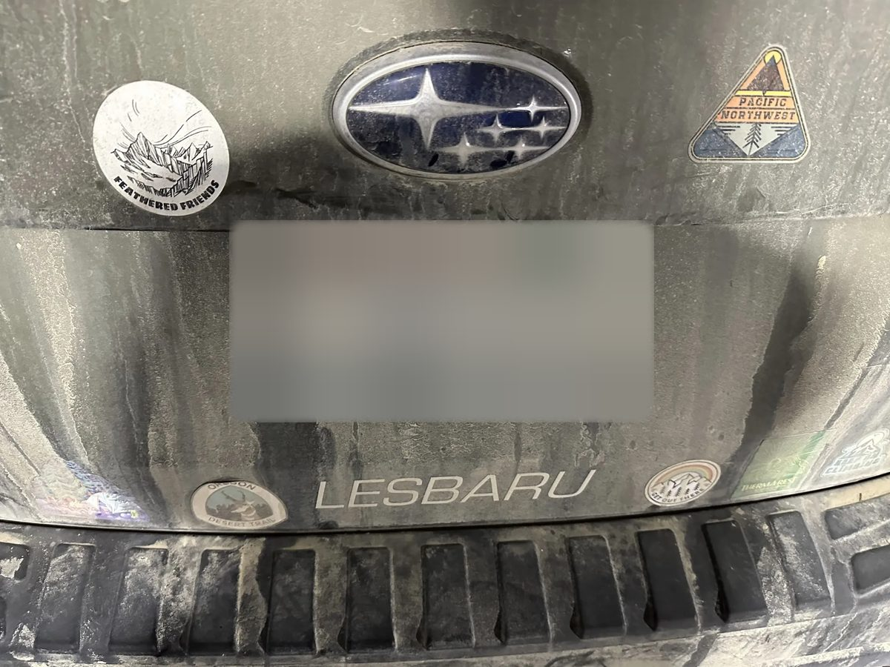

Down for Server Migration 🚗📦
Soooo… we’re moving our servers to a new home. We run most of our AI models on our own hardware (running AI in the cloud got too expensive), so “migration” here means an actual car ride.
Everything is unplugged, wrapped in blankets, and strapped into the Lesbaru. Once it’s racked, cabled, and we’ve found the one power cord we definitely packed, we’ll be back.
If you were in the middle of an appeal, your data is safe. New appeals should be back later today (worst case, early tomorrow). Thank you for your patience ♥️
